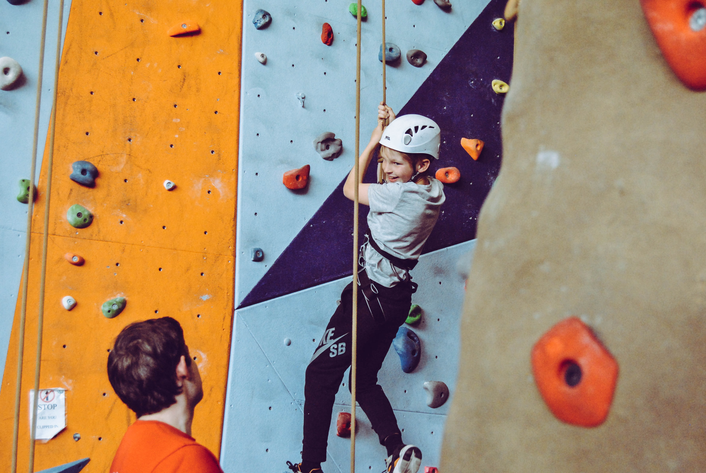

Visitors can take part in a wide range of land-based activities on and off site. Hillwalking From short walks around the site to Munro-bagging expeditions, Lochquarry has it all! Walks can be tailored to suit any age or experience of groups and can last from one hour to all day adventures. Max group size 12. Ages 6+ Archery Are you the next Robin Hood? Learn to hold a bow and fire an arrow and take part in fast and fun shootout competitions. Max group size 6. Ages 6+ Orienteering Set in the centre’s grounds, find all the markers and make it back in time to show off your superior navigation knowledge. Groups of 2+, one map per group. Ages 6+ Axe Throwing Take yourself back to a time of Vikings and have a go at throwing an axe. Try to hit the target, better yet throw yourself a bullseye. Max group size 6. Ages 10+
Water-based activities all take place on Lochquarry itself. Kayaking Have a go at paddling, rolling and rafting in one of our brand new kayaks. Max group size 8. Ages 8+ Canoeing Work single-handedly or in pairs to canoe the length of Lochquarry. You can even take a picnic with you and explore some of the Loch’s islands. Max group size 8 boats (up to 16 people). Ages 6+ Powerboating Take control of one of the Centre’s two RIBs out on Lochquarry and try your hand powerboating. Max group size 6. Ages 12+
All rope-based activities take place on site with full safety equipment provided. Climbing Scale the highs of one of the local quarry slabs. Max group size 8. Ages 8+ Abseiling Take the scary step and abseil from the top of one of the local quarry slabs. There is a lovely view... if you are brave enough to look down! Max group size 8. Ages 8+ Pole Climb Ever wondered how telephone engineers get to the top of the telephone poles? Well, here’s your chance to find out. Max group size 8. Ages 8+
‘Thank you to all the staff who worked so hard, in awful weather, to make sure that all the pupils had an amazing experience’ − Mrs Kahn, Hillend Primary School
000 webhost 